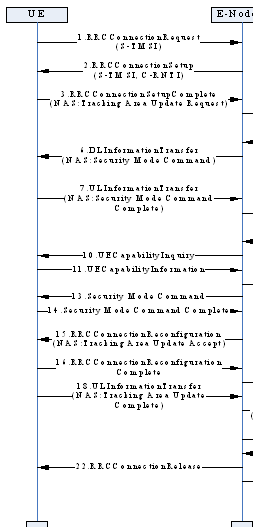
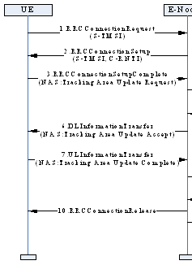
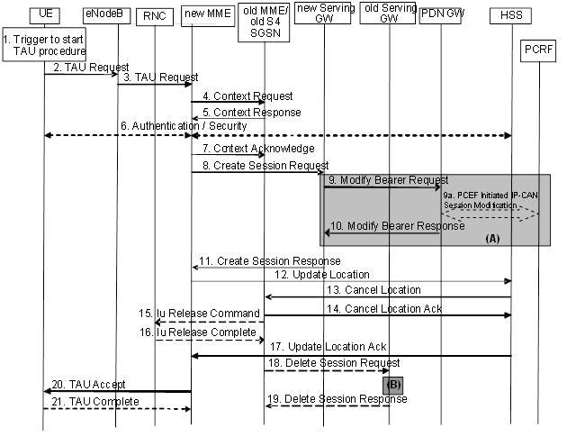

概述
重要LTE基本信令流程记录
参考
内容
1、附着信令流程
Attach附着信令流程（统计时延：红色的为开始和结束信令）
==Attach request==
Unknown(0x0734)（未知的）
rrcConnectionRequest
rrcConnectionSetup
rrcConnectionSetupComplete
rrcConnectionReconfiguration(测量配置) dlInformationTransfer(信息传递) rrcConnectionReconfigurationComplete
Security(安全) protected (受保护)NAS message Authentication(鉴定和证明) request
Authentication response（回复相应）
Unknown(0x077B)
ulInformationTransfer（转移，调任）
dlInformationTransfer
Security(网络安全技术协议) protected （保护什
么安全）NAS message
Security mode(方式，风格) command（命令指挥）
Security mode complete
Unknown(0x0790)
ulInformationTransfer（转移）
ueCapabilityEnquiry（询问能力）
ueCapabilityInformation（通知能力）securityModeCommand
rrcConnectionReconfiguration（重新配置）
rrcConnectionReconfigurationComplete（完整的，圆满地）
Security protected NAS message
Attach （附着）accept
Activate 激活default默认 EPS bearer搬运
context背景 request
Activate default EPS bearer context accept（接受）
==Attach complete==
Unknown(0x072D)
ulInformationTransfer
rrcConnectionReconfiguration rrcConnectionReconfigurationComplete
Detach去附着信令流程（统计时延：红色的为开始和结束信令）
==Detach request==
Unknown(0x0734)
ulInformationTransfer
dlInformationTransfer
Security protected NAS message
==Detach accept==
rrcConnectionRelease(释放)
PDN connectivity (联接能力)request
2、呼叫业务信令流程
UE主叫信令流程（统计时延：红色的为开始和结束信令）
==Extended(扩展,扩大) service request rrcConnectionRequest==
rrcConnectionSetup
==rrcConnectionSetupComplete rrcConnectionReconfiguration(重新配置)== rrcConnectionReconfigurationComplete securityModeCommand
rrcConnectionReconfiguration rrcConnectionReconfigurationComplete rrcConnectionReconfiguration rrcConnectionReconfigurationComplete rrcConnectionRelease
UE被叫信令流程（统计时延：红色的为开始和结束信令）（不含鉴权信令流程）
systemInformationBlock（阻止）Type（类型）1 systemInformationBlockType1
==Paging（分页，寻呼）==
Extended （延伸的）service request rrcConnectionRequest
rrcConnectionSetup
rrcConnectionSetupComplete rrcConnectionReconfiguration rrcConnectionReconfigurationComplete securityModeCommand
==rrcConnectionReconfiguration rrcConnectionReconfiguration（重新配置）==
Complete
rrcConnectionReconfiguration rrcConnectionReconfigurationComplete
（含鉴权信令流程）
systemInformationBlockType1
==Paging==
Extended service request
rrcConnectionRequest
rrcConnectionSetup
rrcConnectionSetupComplete
rrcConnectionReconfiguration
rrcConnectionReconfigurationComplete
dlInformationTransfer
Security protected NAS message
Authentication（身份验证） request
Authentication response（响应）
Unknown(0x077B)
ulInformationTransfer
dlInformationTransfer
Security protected NAS message
Security mode command
Security mode complete
Unknown(0x0790)
ulInformationTransfer
securityModeCommand
rrcConnectionReconfiguration ==rrcConnectionReconfigurationComplete== rrcConnectionReconfiguration rrcConnectionReconfigurationComplete
3、重选与切换信令流程（重要）
小区重选信令流程
systemInformationBlock（切断阻止）Type1
systemInformation
systemInformationBlockType1
systemInformationBlockType1
systemInformation
systemInformationBlockType1
systemInformationBlockType1
systemInformationBlockType1
基站内同频切换信令流程（统计时延：红色的为开始和结束信令）
Measurement（测量）Report（报告） rrcConnectionReconfiguration（重新配子）rrcConnectionReconfigurationComplete rrcConnectionReconfiguration rrcConnectionReconfigurationComplete systemInformationBlockType1
systemInformationBlockType1
systemInformationBlockType1
systemInformationBlockType1
systemInformation
基站间同频切换信令流程（统计时延：红色的为开始和结束信令）
measurementReport
rrcConnectionReconfiguration rrcConnectionReconfigurationComplete systemInformationBlockType1
rrcConnectionReconfiguration rrcConnectionReconfigurationComplete
4、跟踪区域更新信令流程
新小区所属跟踪区域不在终端跟踪区域列表中信令流程

周期性跟踪区域更新信令流程

Reestablish(恢复重建)attempt企图reject拒绝驳回
tracking area update简称TAU(不是很懂)
当手机在GPRS网络或E-UTRAN网络中完成附着后，如果出现如下情况，会触发Tracking Area Update过程。
手机发现进入到了一个新的TA，并且这TA不在TAIs 列表中。
到了TA更新的周期
当手机从UTRAN通过重选进入E-UTRAN时期状态为PMM_Connected。
手机重选E-UTRAN时，其状态为GPRS READY
手机重选到E-UTRAN时TIN为”P-TMSI”
RRC连接释放时，释放原因load re-balancing TAU required”
手机的RRC层通知UE的NAS层，RRC连接失败
手机如下参数发生变化：
UE Network Capability
MS Network Capability
UE Specific DRX Parameters
MS Radio Access capability
对于有SR-VCC 的手机，MS Classmark 2，MS Classmark 3 或Supported Codecs 参数发生了变化。
Tracking Area Update 根据不同的情况也有几种不同的流程与其对应
这里先整理出第一种
Tracking Area Update procedure with Serving GW change
